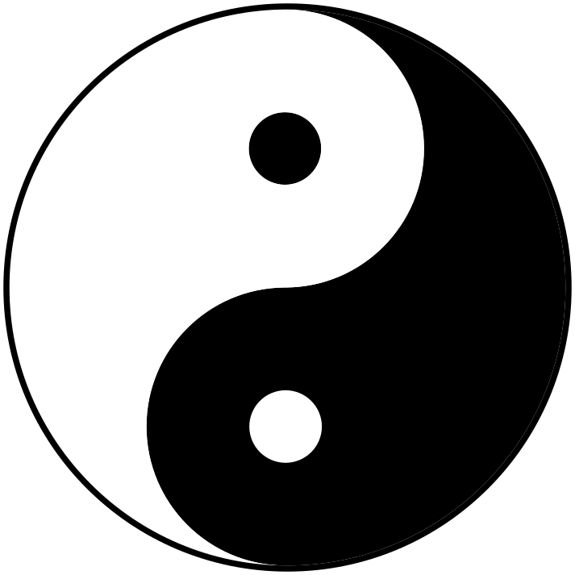

Bits written as hex, so they arrive padded to a whole nibble — the leading zeros are the padding. Laid most significant first, row by row; cell i weighs 2−(i+1), so the value is k/24·nibbles.
Row major, most significant first — the hex string poured in left to right. Only the square is padded green.
